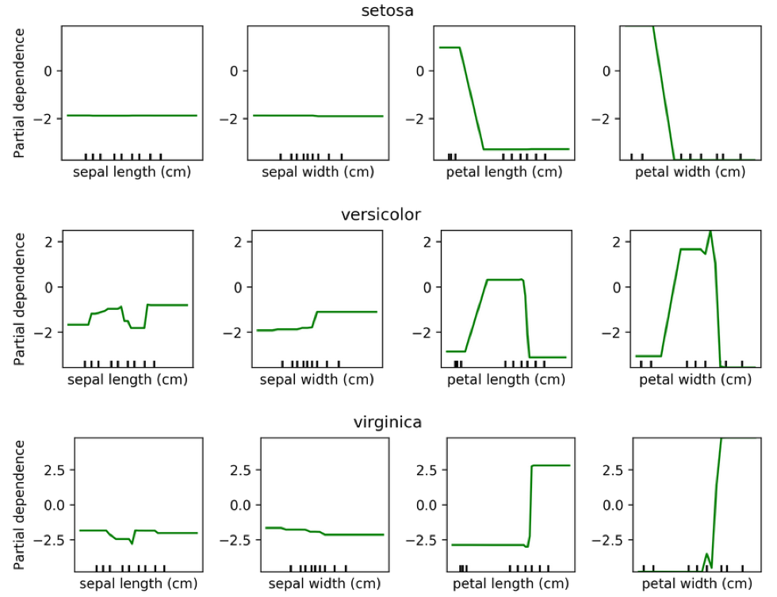

Ensembles
10/21/2022
Robert Utterback (based on slides by Andreas Muller)
Ensemble Models
Poor man's ensembles
- Build different models
- Average the result
- Owen Zhang (long time kaggle 1st): build XGBoosting models with different random seeds.
- More models are better – if they are not correlated.
- Also works with neural networks
- You can average any models as long as they provide calibrated ("good") probabilities.
- Scikit-learn:
VotingClassifierhard and soft voting
VotingClassifier
voting = VotingClassifier(
[('logreg', LogisticRegression(C=100)),
('tree', DecisionTreeClassifier(max_depth=3, random_state=0))],
voting='soft')
voting.fit(X_train, y_train)
lr, tree = voting.estimators_
voting.score(X_test, y_test), lr.score(X_test, y_test), \
tree.score(X_test, y_test)
Bagging (Bootstrap Aggregation)
- Generic way to build “slightly different” models
BaggingClassifier, BaggingRegressor
Bias and Variance
Bias and Variance in Ensembles
- Breiman showed that generalization depends on strength of the individual classifiers and (inversely) on their correlation
- Uncorrelating them might help, even at the expense of strength
Random Forests
Forests
- Build different trees
- Average their results (or vote)
Random Forests
Tree Randomization
- For each tree:
- Pick bootstrap sample of data
- For each split:
- Pick random sample of features
- More trees are always better
Tuning Random Forests
- Main hyperparameter: max_features
- around sqrt(n_features) for classification
- Around n_features for regression
- n_estimators > 100
- Prepruning might help, definitely helps with model size!
- max_depth, max_leaf_nodes, min_samples_split again
Extremely Randomized Trees
- More randomness!
- Randomly draw threshold for each feature
- Doesn’t use bootstrap
- Faster because no sorting / searching
- Can have smoother boundaries
Warm-Starts
train_scores = []
test_scores = []
rf = RandomForestClassifier(warm_start=True)
estimator_range = range(1, 100, 5)
for n_estimators in estimator_range:
rf.n_estimators = n_estimators
rf.fit(X_train, y_train)
train_scores.append(rf.score(X_train, y_train))
test_scores.append(rf.score(X_test, y_test))
Out-of-bag estimates
- Each tree only uses ~66% of data
- Can evaluate it on the rest!
- Make predictions for out-of-bag, average, score.
- Each prediction is an average over different subset of trees
train_scores, test_scores, oob_scores = [], [], []
feature_range = range(1, 64, 5)
for max_features in feature_range:
rf = RandomForestClassifier(max_features=max_features, oob_score=True,
n_estimators=200, random_state=0)
rf.fit(X_train, y_train)
train_scores.append(rf.score(X_train, y_train))
test_scores.append(rf.score(X_test, y_test))
oob_scores.append(rf.oob_score_)
Variable Importance
X_train, X_test, y_train, y_test = \
train_test_split(iris.data, iris.target,
stratify=iris.target, random_state=1)
rf = RandomForestClassifier(n_estimators=100).fit(X_train, y_train)
rf.feature_importances_
plt.barh(range(4), rf.feature_importances_)
plt.yticks(range(4), iris.feature_names);
# array([ 0.126, 0.033, 0.445, 0.396])
More ensembles: Stacking
Averaging
from sklearn.neighbors import KNeighborsClassifier
X, y = make_moons(noise=.4, random_state=16, n_samples=300)
X_train, X_test, y_train, y_test = \
train_test_split(X, y, stratify=y, random_state=0)
voting = VotingClassifier(
[('logreg', LogisticRegression(C=100)),
('tree', DecisionTreeClassifier(max_depth=3)),
('knn', KNeighborsClassifier(n_neighbors=3))],
voting='soft')
voting.fit(X_train, y_train)
lr, tree, knn = voting.estimators_
Simplified Stacking
stacking = make_pipeline(voting, LogisticRegression(C=100))
stacking.fit(X_train, y_train)
stacking.named_steps.logisticregression.coef_
Problem: Overfitting!
- Train first stage on training data
- Second stage trains on probability estimates from training data
- First stage overfitting -> most informative
- Second stage will "trust" model that overfits the most
Stacking
- Use validation set to produce prob. estimates
- Train second step estimator on held-out estimates
- No overfitting of second step!
- For testing: as usual
Hold-out estimates of Probabilities
- Split 1 produces probabilities for Fold 1, split2 for Fold 2 etc.
- Get a probability estimate for each data point!
- Unbiased estimates (like on the test set) for the whole training set!
- Without it: The best estimator is the one that memorized the training set.
from sklearn.model_selection import cross_val_predict
# take only probabilities of positive classes for
# more interpretable coefficients
first_stage = make_pipeline(voting,
FunctionTransformer(lambda X: X[:, 1::2]))
transform_cv = cross_val_predict(first_stage, X_train,
y_train, cv=10, method="transform")
second_stage = LogisticRegression(C=100).fit(transform_cv, y_train)
print(second_stage.coef_)
print(second_stage.score(transform_cv, y_train))
print(second_stage.score(first_stage.transform(X_test), y_test))
Boosting (in General)
Gradient Boosting Algorithm
\[ f_{1}(x) \approx y \] \[ f_{2}(x) \approx y - f_{1}(x) \] \[ f_{3}(x) \approx y - f_{1}(x) - f_{2}(x)\]
\(y \approx\) + + + …
Learning Rate
\(f_{1}(x) \approx y\)
\(f_{2}(x) \approx y - \alpha f_{1}(x)\)
\(f_{3}(x) \approx y - \alpha f_{1}(x) - \alpha f_{2}(x)\)
\(y \approx \alpha\) + \(\alpha\) + \(\alpha\) + …
Learning rate \(\alpha, i.e. 0.1\)
GradientBoostingRegressor
GradientBoostingClassifier
Gradient Boosting Advantages
- Slower to train than RF (serial), but much faster to predict
- Small model size
- Typically more accurate than Random Forests
Tuning Gradient Boosting
- Pick n_estimators, tune learning rate
- Can also tune max_features
- Typically strong pruning via max_depth
Analyzing Gradient Boosting
Partial Dependence Plots
- Marginal dependence of prediction on one or two features
from sklearn.ensemble.partial_dependence import plot_partial_dependence
boston = load_boston()
X_train, X_test, y_train, y_test = \
train_test_split(boston.data, boston.target,
random_state=0)
gbrt = GradientBoostingRegressor().fit(X_train, y_train)
fig, axs = \
plot_partial_dependence(gbrt, X_train,
np.argsort(gbrt.feature_importances_)[-6:],
feature_names=boston.feature_names, n_jobs=3,
grid_resolution=50)
Partial Dependence Plots

Bivariate Partial Dependence Plots
plot_partial_dependence(
gbrt, X_train, [np.argsort(gbrt.feature_importances_)[-2:]],
feature_names=boston.feature_names,
n_jobs=3, grid_resolution=50)

Partial Dependence for Classification
from sklearn.ensemble.partial_dependence import plot_partial_dependence
for i in range(3):
fig, axs = \
plot_partial_dependence(gbrt, X_train, range(4), n_cols=4,
feature_names=iris.feature_names,
grid_resolution=50, label=i)

Practical details
XGBoost
pip install xgboost
from xgboost import XGBClassifier
xgb = XGBClassifier()
xgb.fit(X_train, y_train)
xgb.score(X_test, y_test)
- supports missing values
- supports multi-core and GPU (sklearn does not)
- Monotonicity constraints
- Supports sparse data
- Exact splits ~5x faster on single core
- Approximate splits (bin the features, don't sort them), multi-core \(\to\) more speed!
- Also check lightGBM (even faster?)
LightGBM
pip install lightgbm
from lightgbm.sklearn import LGBMClassifier
lgbm = LGBMClassifier()
lgbm.fit(X_train, y_train)
lgbm.score(X_test, y_test)
- supports missing values
- native support for categorical variables
- multicore + GPU training
- montonicity contraints
- sparse data
CatBoost
pip install catboost
from catboost.sklearn import CatBoostClassifier
catb = CatBoostClassifier()
catb.fit(X_train, y_train)
catb.score(X_test, y_test)
- optimized for categorical variables
- uses one feature / threshold for all splits on a given level aka symmetric trees
- Symmetric trees are "different" but can be much faster
- supports missing value
- GPU training
- monotonicity constraints
- uses bagged and smoothed version of target encoding for categorical variables
- lots of tooling
Newer sklearn Estimator
GradientBoostingClassifier
- no feature 'binning'
- single core
- sparse data support
HistGradientBoostingClassifier
- binning (makes training faster for \(m=10,000+\))
- multicore
- no sparse data support
- missing value support (!)
- monotonicity constraint support (!)
- native categorical variables (must have numeric labels)
Early stopping
- Adding trees can lead to overfitting
- Stop adding trees when validation accuracy stops increasing
- Optional in XGBoost and sklearn \(\ge\) 0.20
When to use tree-based models
- Model non-linear relationships
- Doesn’t care about scaling, no need for feature engineering
- Single tree: very interpretable (if small)
- Random forests: very robust, good benchmark
- Gradient boosting often best performance with careful tuning
Dynamic Ensemble Selection
Motivation
- letting all classifiers vote is dumb
- Some classifiers good at some kinds of points, bad at others
- (just like humans)
- Idea: learn which classifiers are good for which "regions"
DESlib Quick Example
from deslib.des.knora_e import KNORAE
# 'pool' of 10 classifiers
pool_classifiers = RandomForestClassifier(n_estimators=10)
pool_classifiers.fit(X_train, y_train)
knorae = KNORAE(pool_classifiers) # init DES model
knorae.fit(X_dsel, y_dsel) # preprocess to find good 'regions'
knorae.predict(X_test) # predict